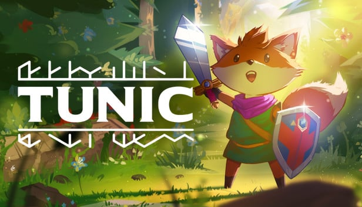
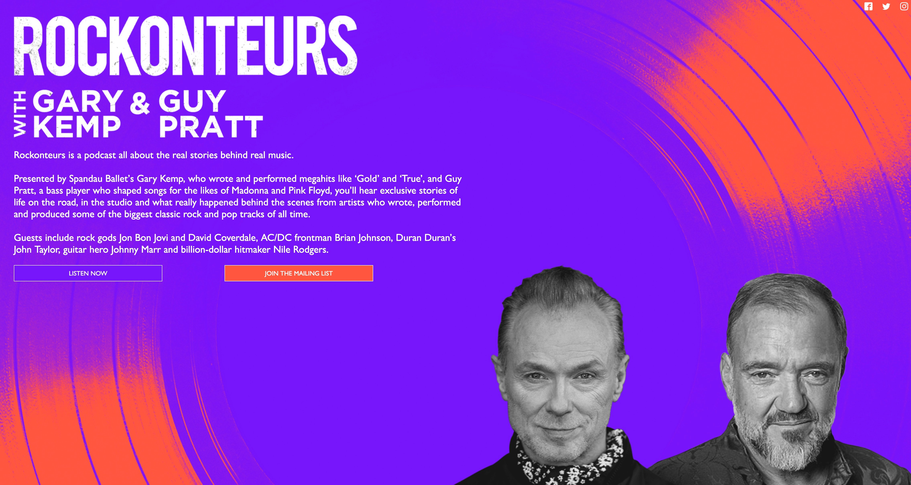

Luke Collins
SVP of content strategy
Go to Luke’s pick


I recently finished the novel Felix Ever After by Kacen Callender, and I immediately handed it off to my 16-year-old. The book follows Felix, a trans teen attending a competitive summer arts program in New York City, as he navigates friendship, love, loss, forgiveness, and self-discovery. You’ll root for Felix all the way through—as he is harassed, questions his identity, and finds his voice—and you just might fall in love with his best friend, Ezra. It’s a must read for young adults grappling with many of the same challenges, and a fun and fulfilling one for those of us (far) beyond that time.
Annie Mullowney
senior editor
Go to Annie’s pick
Boris Strelchin
controller
Go to Boris’s pick

I stumbled on The Rockonteurs podcast in predictable internet fashion: I spied Neil Finn as a guest, and pretty soon I'd inhaled half a dozen episodes. It's hosted by Gary Kemp, the Spandau Ballet songwriter and frontman (“True”! “Gold”!), and Guy Pratt, the legendary session bass player who’s worked extensively with Pink Floyd and dozens of others including Roxy Music, Madonna, and Michael Jackson. The guests each week are a cavalcade of 70s to naughts stars and behind-the-scenes giants: Simon Le Bon, Jim Kerr, Adam Clayton, Mick Fleetwood, Rick Wakeman, Boy George, Dave Stewart, Paul Stanley, Mike Rutherford, David Crosby, Suzi Quatro, Alice Cooper, Jon Bon Jovi ... the list goes on.
But what makes it so great is what Kemp and Pratt bring: an encyclopedic knowledge of the music scene from the past 40-plus years coupled with personal relationships that allow conversations to go way deeper than superficial chitchat. Want to know how Sting cracked Stewart Copeland’s ribs ... and how Copeland’s roadie dressed like him to fill in on drums, lit carefully to keep the fans in the dark? Check out the episode with legendary producer Hugh Padgham. Interested in how within 18 months Oasis went from being on unemployment benefits to electrifying 250,000 delirious fans over two nights at Knebworth? Listen to the one with Noel Gallagher. Every episode has something fascinating about songwriting, production, and how music really gets made. Oh, and the Neil Finn one is obviously a boomer.

It’s been a grueling couple of weeks. The slaying of children, teachers, and Black shoppers in mass shootings; the anniversary of the murder of George Floyd; the stripping away of women’s and trans kids’ rights; the inability to supply food for our babies. “We are living in hell,” someone posted on social media.
As Pride Month kicks off, I’m taking a moment to remember—and celebrate—what people, what communities, can accomplish when
they speak up. When they protest. When they demand better. When
they persist.
Below we have a Pride Month–inspired pick, a video game, and a podcast, and we top it off with our favorite things to sip while we celebrate.
From the outside, Tunic is a gorgeous-looking isometric action/adventure game with a cute and inviting aesthetic. But it’s a classic example of “don’t judge a book by its cover.” Despite the cute facade, it is unapologetically difficult—but at least it’s paired with an excellent, ambient soundtrack.
The game is full of riddles and secrets, but perhaps the most brilliant feature comes in the form of the collectible pages that start forming out a digital instruction manual of the game, reminiscent of old gaming manuals from the 8- and 16-bit eras of gaming. Tunic has a cyphered language, but it has sprinkles of real words giving you context clues of different mechanics. It’s one of the most unique examples of video game exposition, as many of the secrets and narrative within the world reside in the different collectible pages found throughout.




Our favorite party drinks

KC:
Poor Man’s
Shandy: Miller Lite with lemon juice
Karen:
Watermelon margaritas
Annie:
Southsider
Morgan:
Moscow mule